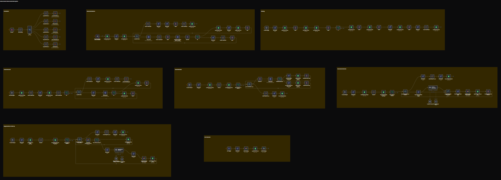

YouTube Creator Intelligence & Outreach System
Discover, qualify, enrich, verify, personalize, and engage YouTube creators through an automated outreach pipeline.

The Problem
Finding relevant YouTube creators for outreach is often a slow and highly manual process.
- Creator discovery requires repeated manual research
- Relevant channels must be filtered and qualified
- Business contact information can be difficult to find
- Email addresses need to be checked before outreach
- Writing personalized messages for every creator takes time
- Replies and follow-ups are difficult to manage consistently
- Failures across multiple automation stages can go unnoticed
The challenge is not simply finding creators — it is managing the entire journey from discovery to outreach.
Why This Matters
Effective creator outreach requires more than a list of YouTube channels.
Creators need to be discovered, qualified, enriched with contact information, verified, and approached with relevant personalized communication.
Once outreach begins, replies, follow-ups, and workflow failures also need to be handled reliably.
This system connects these stages into one structured automation architecture.
How The System Works
- A central orchestration workflow coordinates the outreach pipeline
- YouTube API is used to discover relevant creator channels
- Discovered channels are filtered according to qualification criteria
- Qualified creators are passed into the email enrichment stage
- APIFY actors are used to discover potential business email addresses
- Discovered contacts are passed into a separate verification workflow
- APIFY is used again to check whether email addresses appear deliverable
- Verified contacts are passed into the AI personalization workflow
- Creator and channel information is used to generate personalized outreach
- Reply detection monitors the communication process
- Follow-up workflows handle prospects that do not respond
- Error detection provides visibility when workflow stages fail
The 8-Workflow Architecture
The system is designed as eight connected workflows, with each workflow responsible for a specific stage of the creator outreach process.
-
1. Orchestration System —
Coordinates the different workflows and controls the movement of creator data through the pipeline.
-
2. Channel Discovery System —
Discovers relevant YouTube channels and collects the information required for downstream processing.
-
3. Channel Filtering System —
Processes discovered channels and removes prospects that do not meet the required conditions.
-
4. Email Enrichment System —
Uses APIFY to discover potential business email addresses associated with qualified creators.
-
5. Email Verification System —
Uses APIFY to verify discovered email addresses and identify contacts that appear deliverable.
-
6. AI Personal Outreach System —
Uses creator and channel information to generate personalized outreach emails.
-
7. Reply & Follow-Up System —
Detects replies and manages the next communication stage, including follow-ups for non-responsive prospects.
-
8. Error Detection System —
Monitors the automation architecture so workflow failures can be detected instead of remaining unnoticed.
The Outreach Pipeline
The architecture moves qualified creators through a connected sequence of automated stages:
Discovery → Filtering → Enrichment → Verification → AI Personalization → Outreach → Reply & Follow-Up → Error Monitoring
Each stage has a specific responsibility, allowing the overall system to remain modular and easier to operate, troubleshoot, and extend.
AI-Powered Personalization
Instead of sending the same generic message to every creator, the system uses available creator and channel information to generate personalized outreach.
This allows the outreach workflow to produce messages that are based on the individual prospect rather than relying on a single static template.
Reliability & Error Detection
A multi-stage automation can fail at different points — from data collection and enrichment to verification, outreach, or follow-up.
The system therefore includes dedicated error detection so failures can be surfaced instead of silently interrupting the outreach pipeline.
- Centralized visibility into workflow failures
- Detection of failed processing stages
- Improved operational visibility
- More reliable multi-workflow execution
Use Cases
- YouTube creator outreach
- Influencer partnership prospecting
- Creator marketing campaigns
- Brand-to-creator outreach
- Agency creator acquisition
- Scalable creator prospect research
Business Impact
- Faster creator prospect discovery
- Reduced manual research workload
- Higher-quality outreach lists
- Improved contact data quality
- Personalized outreach at scale
- More consistent follow-up
- Better campaign organization
- Improved workflow reliability
- Greater operational visibility
- Scalable creator outreach operations
Instead of manually searching for creators, finding contact information, verifying emails, writing messages, and tracking follow-ups, the system connects each stage into an automated pipeline.
The Result
The system transforms YouTube creator discovery into a structured automated outreach infrastructure.
Qualified creators can move through discovery, filtering, enrichment, verification, personalization, outreach, and follow-up while dedicated error monitoring provides visibility across the automation.
The result is a scalable creator prospecting system designed to reduce repetitive research while maintaining personalization, data quality, communication consistency, and operational visibility.
Get The System →